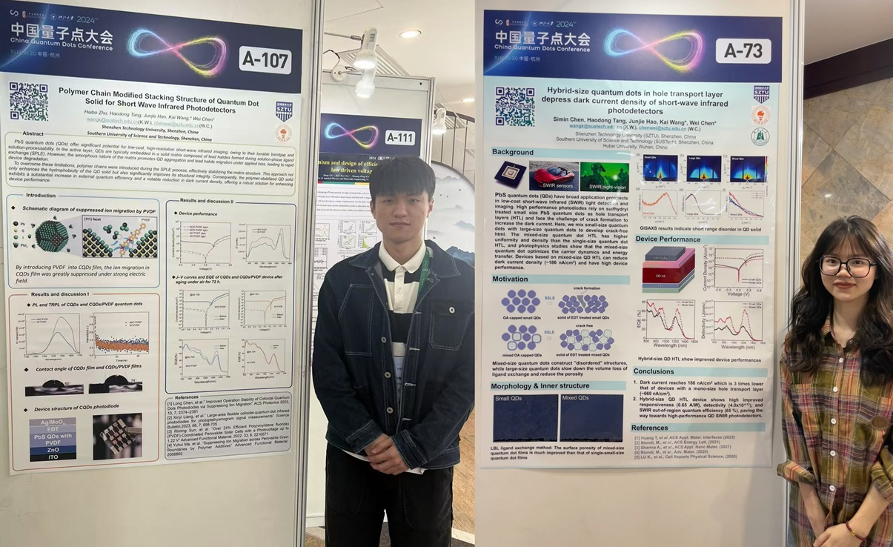

Welcome to Wei Chen's Homepage
Dr. Wei Chen / 陈威 博士
Dr.rer.nat. at TUM / 毕业于慕尼黑工业大学（德国）物理系
Associate Professor (tenured) / 长聘副教授
College of Engineering Physics / 工程物理学院
Shenzhen Technology University (SZTU) / 深圳技术大学
E-mail: chenwei@sztu.edu.cn

[1] Nano & Angstrom leveled structure characterizations via grazing-incidence X-ray scattering (GIXS) and structure modelings of thin films of colloidal quantum dots (CQDs), polymers, perovskites [Natural Science Foundation of Top Talent of SZTU, No. GDRC202340, 2024-2026]
[2] Structural disorder correlated charge carrier dynamics in CQD solid films [Guangdong Basic and Applied Basic Research Foundation, No.2021A1515110535, 2021-2024]
[3] Degradation mechanism of solution-processed semiconductor thin films via GIXS [National Natural Science Foundation of China (NSFC), No.12204318, 2023-2025]

[4] Nanocrystal thin film and IC integrations towards high resolution (< 2 um) imaging technique [Shenzhen Science and Technology Program, No. RCYX20221008092908030, 2023-2025]
[5] Noval CQD optoelectronic application development [Industrial project, 2024-2026]
Contact Information

Dr. Wei Chen is an Associate Professor (tenured) at Shenzhen Technology University (SZTU) and the PI of the Energy & Photonics Lab (EPL). Wei received a B.Sc. degree in physics at Hubei Engineering University (2006), a M.Sc. degree in materials science at Hubei University (2013), and a Ph.D. degree (Dr.rer.nat.) at the Technical University of Munich (TUM, 2020). Before moving to Germany for the Ph.D. study, Wei spent three years (2013-2016) working on CQD optoelectronic applications as a research assistant at SUSTech where Wei received valuable experience in developing high-quality CQD materials and advanced optoelectronic applications.
Along with the PhD study in Germany, Wei promoted the study of the structure-performance relation of solution-processed semiconductor thin films (SPSFs), including colloidal quantum dot (CQD) thin films, perovskite thin films, and organic polymer thin films, via grazing-incidence X-ray scattering (GIXS). On this basis, Wei has been interested in developing industrial-leveled photodetector applications based on novel thin films, particularly based on CQD thin films, due to their magic material properties. So far, Wei has already established broad collaborations in academics and industries.
Wei joined SZTU as an Assistant Professor in 2022 and rapidly received an exceptional promotion in 2024, becoming an Associate Professor. Wei presently lectures about fundamental materials science (Condensed Matter Physics part) such as Solid State Physics and Semiconductor Physics to undergraduate students. Students with lecture-relevant questions or research interests are always welcome to have discussions or visit the EPL. Please feel free to email Dr. Chen.
Besides, Wei is into physical sports, like football, He joined the [SUN-LIGHT] football team of SUSTech in 2021 and the team has participated in industrial football leagues in the Greater Bay Area.

[2024/11] Wei presented the work about the surface reconstruction of PbS QDs for SWIR PD at the ODE 2024 Shenzhen conference QD seminar.
[2024/10] Haibo Zhu (left), and Simin Chen (right) participated in the poster seminar of China QD 2024, Hangzhou
[2024/10] Wei joined the Sino-German Workshop and gave a plenary talk in Hangzhou
© Copyright 2025, Wei Chen @ SZTU